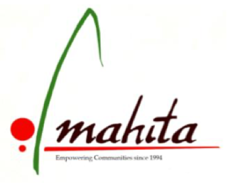
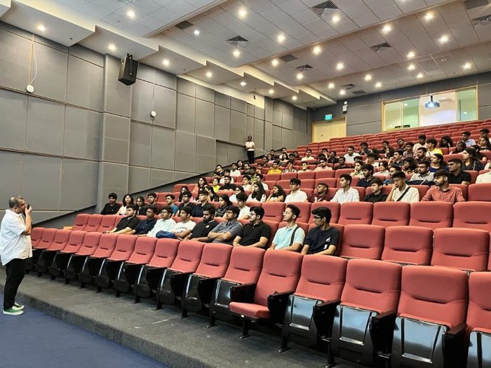

hey, i'm advaith. i build data systems that people trust.
data, software and ai engineer with an m.s. in data science at uw–madison. i spend my days on cloud pipelines, ai, infrastructure as code and models that survive contact with real data <3
from ocr pipelines in bengaluru to cloud migrations in madison — building the plumbing that analytics and ml teams stand on.
may 2026 — aug 2026
dodgeville, wi · usa
Customer Analytics Intern
Lands' End
Automated reporting of customer retention and demand metrics with AWS Lambda, Athena, SES, CloudFormation and Power BI, delivering scheduled insights to stakeholders and cutting manual reporting from 2 hours to 4–5 seconds.
Engineered an Infrastructure-as-Code foundation from scratch using Terraform and Git CI/CD, empowering the Customer Insights team to build and manage cloud infrastructure across 16 active IaaS resources.
Rebuilt GitLab CI/CD pipelines with multithreaded parallel testing, cutting pipeline execution time by 34%.
AWS LambdaAthenaSESCloudFormationTerraformGitLab CI/CDPower BI
the dodgeville distribution center
may 2025 — aug 2025
madison, wi · usa
Data Engineering Intern
American Family Insurance
Led the AWS-to-GCP migration of data pipelines, redesigning ETL workflows with Cloud Composer, BigQuery SQL and dynamic Airflow DAGs, and implementing incremental loads across 4 pipelines — 16× faster processing, 11× cost reduction and 33.34% cost savings per pipeline.
Recognized for identifying a critical data inconsistency during a pipeline POC, where GCP batch ingestion contained 65 extra entries compared to AWS real-time data within 10M+ records, enabling production fixes before launch.
Piloted Claude Code (agentic AI) onboarding for the Data Engineering org, enabling a secure, frozen-deployment setup on Google Vertex AI and accelerating cross-team adoption of AI-assisted development.
Deployed an end-to-end agentic workflow across 11 diverse document datasets, parsing complex medical and identification entities at a 1.2% false-positive rate.
Built an OCR pipeline (PaddleOCR, Tesseract, Azure Vision, Redshift) to classify and extract unstructured clinical handwriting, tuning hyperparameters to reach 89% inference accuracy.
Engineered a streamlined NLP extraction system using OpenAI APIs for named entity recognition, improving processing efficiency by replacing heavy agent architectures with targeted LLM API calls.
Architected a Python Flask-based analytics platform with PostgreSQL, building RESTful APIs to process complex JSON records via Pandas and NumPy — cutting manual data-handling time 91% for stakeholders.
Developed 21 Google Charts dashboards visualizing workforce metrics, deploying the WSGI app via NGROK so the HR team could self-serve insights and cut turnaround by ~30%.
FlaskPostgreSQLREST APIsPandasNumPy
on the teamlease floor, bengaluru
jun 2022 — sep 2022
hyderabad, ts · india
ML Engineering Intern
Automatic Data Processing (ADP)
Engineered an XGBoost attrition prediction model reaching 93.8% accuracy, processing complex JSON employee data with Pandas and surfacing insight through 15+ feature visualizations to analyze employee lifespan.
XGBoostPandasFeature engineering
adp hyderabad
leadership & volunteering
four years of running a public speaking club — and learning that explaining the work matters as much as doing it.
2020 — 2024
vellore · india
district 120
Area Permissions & Club President
Toastmasters International — TRUENO VIT
Led TRUENO VIT, one of ten clubs in the Toastmasters International chapter at VIT, as President — then held Area Permissions, the highest office anyone from the chapter has held.
Held every officer role on the way there: VP Education, VP Membership and VP Public Relations, and stayed on afterwards as Immediate Past President.
Contest record: first at Area level in both the International Speech Contest and Table Topics; third in Division A for Speech Evaluation at ACE 2022; third at club level in the Humorous Speech Contest.
Mentored juniors across all four years — coaching first speeches, running evaluations and bringing new members into the club.
PresidentArea PermissionsVP EducationVP MembershipVP Public RelationsImmediate Past PresidentMentor
ace 2022, division a — speech evaluation

may 2022 — jul 2022
hyderabad, ts · india
volunteering
Best Volunteer
Mahita — Community Livelihood Centres
Spent a two-month placement at Mahita's Community Livelihood Centres in the Asifnagar slums of Hyderabad, and was recognised as Best Volunteer for the work.
Taught spoken English and communication skills to children at the Asifnagar centre, and computer literacy to adolescent girls at Mahita's job-oriented vocational centres.
Ran leadership and participation sessions for girls from marginalised communities, and organised community events that pulled in both government and private support.
vellore → singapore → madison. the through-line has always been statistics and systems.
sep 2024 — may 2026
madison, wi · usa
gpa 3.8 / 4.0
M.S. Data Science
University of Wisconsin–Madison
Graduate coursework across statistical modeling, machine learning, optimization and large-scale data systems.
Built the multi-warehouse freight optimization model and the hybrid EEG classifier during this programme.
on the lakefront, madison
jun 2023
singapore
summer research
Deep Learning Research Programme
National University of Singapore & Amazon
Coursework in data analysis, deep learning and statistics alongside a seismic prediction project reaching 91% accuracy with an ANN and random forest ensemble.
Hands-on AWS sessions — Athena, EC2, DynamoDB, SageMaker, Kendra — used to optimize the project's models by 25%.
Awarded the AWS Certificate for Data Analytics Using Big Data & Deep Learning.

lecture hall at nus, june 2023
sep 2020 — jun 2024
vellore · india
cgpa 8.89 / 10
B.Tech Computer Science & Engineering
Vellore Institute of Technology
Published the IEEE NEleX paper on PCOS detection during the degree, alongside internships at ADP, Teamlease and Bajaj Finserv.
President of TRUENO VIT (Toastmasters International) and Best Volunteer at Mahita.
39th annual convocation, vellore — 2024
beyond the transcript
Certifications
credentials
AWS Certificate for Data Analytics Using Big Data & Deep Learning — National University of Singapore.
Leadership
off the clock
Area Permissions and Club President at Toastmasters International — TRUENO VIT. Best Volunteer at Mahita, Hyderabad.
agent tooling, signal processing, optimization models and a few weekend experiments. every cover below is drawn from the shape of the problem it solves.
work that made it past reviewers, plus the research that led there.
2023
ieee · nelex
conference paper
Unveiling Disparities in Polycystic Ovary Syndrome Detection
A Complex Comparative Study Integrating Deep Neural Networks and Cutting-edge Data Visualization Modalities
Published in IEEE's 2023 International Conference on Next Generation Electronics (NEleX).
Compares deep neural network architectures against classical approaches for PCOS detection, pairing model performance with interactive visualization so clinicians can see why a prediction lands where it does.
Deep learningHealthcareData visualizationR / Plotly
AWS EC2S3DynamoDBAthenaLambdaGlueRedshiftSageMakerBedrockNeptuneSQSCloudFormationGCP BigQueryPub/SubComposerGCSDataflowNeo4jVertex AIAzureSnowflakePower BI
Languages
day to day
PythonSQLGoRJavaC / C++ScalaJavaScriptHCL
is sky the limit?
kid cudi <3
07 — contact
say hi. i reply to everything.
working on something with messy data, cloud pipelines or models that need to hold up in production? i'd like to hear about it — and i'm open to full-time data and ml engineering roles.